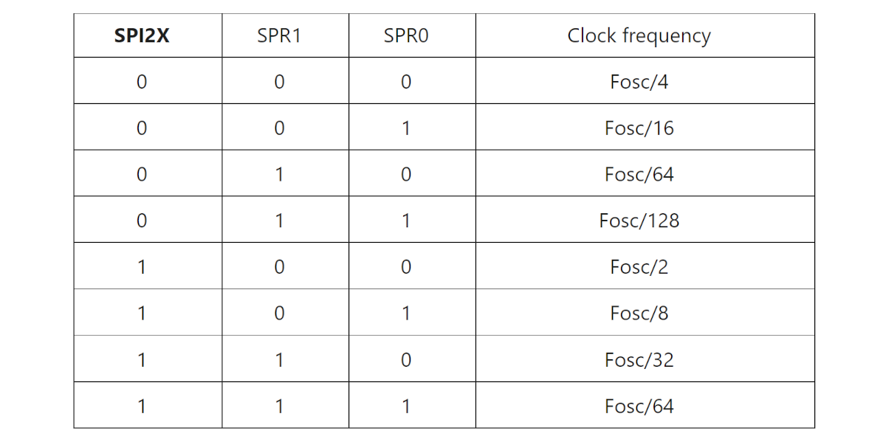

การสื่อสารด้วยบัส SPI และเขียนโปรแกรมด้วย Arduino สำหรับบอร์ด Uno / Nano#
Keywords: SPI Bus, SPI Master, SPI Slave, Arduino, AVR / ATmega328P
▷ การสื่อสารด้วยบัส SPI#
บทความนี้นำเสนอรูปแบบการสื่อสารระหว่าง SPI Master และ Slave โดยใช้บอร์ด Arduino เช่น Uno หรือ Nano ซึ่งมีชิปไมโครคอนโทรลเลอร์ ATmega328P และตัวอย่างการเขียนโค้ด Arduino Sketch
บัส (Bus) หมายถึง การกำหนดรูปแบบการสื่อสารข้อมูลโดยใช้กลุ่มของสายสัญญาณทางไฟฟ้าในระบบดิจิทัล และ SPI (Serial Peripheral Interface) เป็นรูปแบบหนึ่งของการสื่อสารข้อมูลระหว่างอุปกรณ์แบบดิจิทัลที่พบเห็นได้บ่อย และใช้กับอุปกรณ์สองฝ่ายหรือมากกว่า และนำมาต่อใช้งานร่วมกันให้เป็นระบบบัส
บัส SPI ส่งและรับข้อมูลทีละบิต (Bit Serial) และใช้สัญญาณนาฬิกา ( Clock Signal หรือ CLK) เป็นตัวกำหนดจังหวะการทำงาน (ดังนั้นจึงเรียกว่า Synchronous, Bit-Serial Data Communication) มีการกำหนดบทบาทในการทำงานของอุปกรณ์ในระบบบัส แบ่งเป็น SPI Master ("มาสเตอร์") และ SPI Slave ("สเลฟ")
- อุปกรณ์ที่ทำหน้าที่เป็น SPI Master เป็นฝ่ายเริ่มการสื่อสารข้อมูล และสร้างสัญญาณ Clock ซึ่งใช้ชื่อสัญญาณว่า SCK หรือ SCLK (Serial Clock) มากำหนดจังหวะการส่งและรับข้อมูล
- อุปกรณ์ SPI Slave เป็นฝ่ายคอยตอบสนองในระบบบัส SPI อาจมีอุปกรณ์ที่เป็น SPI Slave ได้มากกว่าหนึ่ง (เรียกกรณีนี้ว่า Single-Master / Multi-Slave SPI Bus)
ข้อสังเกต: ในปัจจุบันมีการเปลี่ยนชื่อเรียกใหม่ จากเดิม SPI Master / Slave เป็น SPI Controller / Peripheral ตามลำดับ
โดยทั่วไป SPI ใช้สัญญาณ 4 เส้น (ใช้งานตามรูปแบบที่เรียกว่า 4-Wire SPI) ได้แก่
- SCK (Serial Clock) — เป็นสัญญาณ CLK ที่ถูกสร้างโดยอุปกรณ์ที่เป็น SPI Master
- MOSI (Master-Out, Slave-In) หรือ COPI (Controller-Out, Peripheral-In) — เป็นสัญญาณสำหรับส่งข้อมูลบิตออกจาก SPI Master ไปยัง SPI Slave
- MISO (Master-In, Slave-Out) หรือ หรือ CIPO (Controller-In, Peripheral-Out) — เป็นสัญญาณสำหรับส่งข้อมูลบิตออกจาก SPI Slave ไปยัง SPI Master
- SS (Slave Select) หรือ CS (Chip Select) — เป็นสัญญาณที่สร้างโดย SPI Master และทำงานแบบ Active-Low (เช่น มีสัญลักษณ์ # หรือ / เขียนกำกับไว้หน้าชื่อสัญญาณ) เพื่อใช้ระบุว่า ต้องการสื่อสารกับ SPI Slave หรือไม่
ในกรณีที่มีอุปกรณ์ SPI Slave มากกว่าหนึ่งชุด จะต้องมีสัญญาณควบคุมมากกว่าหนึ่งเส้น และแยกสำหรับแต่ละอุปกรณ์ (หนึ่งสัญญาณควบคุมต่อหนึ่งอุปกรณ์) แต่ใช้สัญญาณ SCLK, MOSI และ MISO ร่วมกัน
เมื่อจะส่งและรับข้อมูลผ่านบัส SPI (เรียกว่า SPI Data Transfer) สัญญาณควบคุม #SS (หรือ #CS) จะต้องเปลี่ยนจากสถานะปรกติ คือ จาก HIGH เป็น LOW จากนั้นข้อมูลหนึ่งไบต์จะถูกเลื่อนบิตและส่งออกไปทีละบิตจาก SPI Master ด้วยวงจรเลื่อนบิต (Shift Register) ตามจังหวะของสัญญาณ SCK
ในการเลื่อนข้อมูลออกไปทีละบิต จะต้องมีกำหนดด้วยว่า จะให้บิต MSB (Most-Significant Bit) หรือ LSB (Least-Significant Bit) ถูกส่งออกไปก่อน และในขณะเดียวกันก็จะรับข้อมูลทีละบิตจาก SPI Slave จนได้ครบหนึ่งไบต์ (หรือกล่าวได้ว่า ข้อมูลจำนวนหนึ่งเฟรม หรือ Data Frame เท่ากับ 8 บิต)
ดังนั้นเมื่อ SPI Master ส่งข้อมูลจำนวนหนึ่งไบต์ไปยัง SPI Slave ก็จะได้ข้อมูลหนึ่งไบต์จาก SPI Slave เช่นกัน ในช่วงเวลาที่สัญญาณควบคุมเป็น LOW อาจมีการส่ง-รับข้อมูลได้มากกว่าหนึ่งไบต์ (Multi-Byte SPI Transfer / Transaction)
รูป: SPI Bus (Source: Wikipedia)
รูป: SPI Bus (Source: Sparkfun)
▷ โหมดการทำงานของบัส SPI#
การทำงานของบัส SPI แบ่งได้เป็น 4 โหมด (SPI Modes: 0,1,2,3) จำแนกตามพารามิเตอร์สองตัวที่เรียกว่า CPOL (Clock Polarity) และ CPHA (Clock Phase) ซึ่งจะเป็นตัวกำหนดลักษณะการทำงานของบัส เช่น การเลือกที่จะส่ง-รับบิตที่ขอบขาขึ้น (Rising) หรือ ขอบขาลง (Falling) ของสัญญาณ SCK และจะให้สัญญาณ SCK อยู่ที่ระดับลอจิก HIGH หรือ LOW เมื่อไม่อยู่ในช่วงของการส่งข้อมูลใด ๆ ในบัส (ช่วงที่เรียกว่า Bus Idle) แต่โดยทั่วไปจะเลือกใช้ SPI Mode 0
| SPI Mode | Clock Polarity (CPOL) | Clock Phase (CPHA) | Output Edge | Data Capture |
|---|---|---|---|---|
| Mode 0 | 0 | 0 | Falling | Rising |
| Mode 1 | 0 | 1 | Rising | Falling |
| Mode 2 | 1 | 0 | Rising | Falling |
| Mode 3 | 1 | 1 | Falling | Rising |
จากตารางจะเห็นได้ว่า
- โหมด 0:
- บัสอยู่ในสถานะ Idle (เมื่อยังไม่รับหรือส่งข้อมูลใด ๆ) สัญญาณ SCK เป็น LOW
- การอ่านค่าบิตอินพุตในแต่ละครั้ง เกิดขึ้นเมื่อมีขอบขาขึ้นของสัญญาณ SCK
- การเปลี่ยนแปลงค่าบิตเอาต์พุต เกิดขึ้นเมื่อมีขอบขาลงของสัญญาณ SCK
- โหมด 1:
- บัสอยู่ในสถานะ Idle สัญญาณ SCK เป็น LOW
- การอ่านค่าบิตอินพุตในแต่ละครั้ง เกิดขึ้นเมื่อมีขอบขาลงของสัญญาณ SCK
- การเปลี่ยนแปลงค่าบิตเอาต์พุต เกิดขึ้นเมื่อมีขอบขาขึ้นของสัญญาณ SCK
- โหมด 2:
- บัสอยู่ในสถานะ Idle สัญญาณ SCK เป็น HIGH
- การอ่านค่าบิตอินพุตในแต่ละครั้ง เกิดขึ้นเมื่อมีขอบขาลงของสัญญาณ SCK
- การเปลี่ยนแปลงค่าบิตเอาต์พุต เกิดขึ้นเมื่อมีขอบขาขึ้นของสัญญาณ SCK
- โหมด 3:
- บัสอยู่ในสถานะ Idle สัญญาณ SCK เป็น HIGH
- การอ่านค่าบิตอินพุตในแต่ละครั้ง เกิดขึ้นเมื่อมีขอบขาขึ้นของสัญญาณ SCK
- การเปลี่ยนแปลงค่าบิตเอาต์พุต เกิดขึ้นเมื่อมีขอบขาลงของสัญญาณ SCK
ข้อสังเกต:
- บัส SPI แบบปรกติ มีการใช้งาน 4 ขาสัญญาณ คือ SCLK, MOSI, MISO และ SS แต่ละสัญญาณมีทิศทางเดียว (Unidirectional) สัญญาณ MOSI และ MISO แยกกัน ดังนั้นจึงสามารถส่ง-รับข้อมูลได้พร้อมกัน (Full-duplex)
- บัส SPI ที่มีการใช้งานเพียง 3 สัญญาณ หรือที่เรียกว่า 3-Wire SPI หมายถึง การใช้งานขาสัญญาณ MOSI / MISO ร่วมกันสำหรับสัญญาณข้อมูล (เช่น เรียกว่า SDO/SDI หรือ SDIO) เป็นสัญญาณแบบสองทิศทาง (Unidirectional) มีการกำหนดทิศทางต่างกันในแต่ละช่วงเวลา เมื่อส่งข้อมูลบิตออกไปจาก SPI Master ให้เปลี่ยนเป็นเอาต์พุต และหลังจากนั้นรับเข้ามา ให้เปลี่ยนเป็นอินพุต ดังนั้นจึงเป็นการรับส่งข้อมูลแบบ Half-duplex
▷ การเปรียบเทียบระหว่าง SPI และ I2C ในการใช้งาน#
I2C (inter-IC) เป็นอีกรูปแบบการสื่อสารข้อมูลแบบดิจิทัลในประเภทที่เรียกว่า Synchronous, Bit-Serial Data Communication นิยมใช้งานอย่างแพร่หลายเช่นเดียวกับบัส SPI
ลองมาดูตัวอย่างการเปรียบเทียบประเด็นในการใช้งานของบัสทั้งสองแบบ
| ประเด็นการเปรียบเทียบ | SPI | I2C |
|---|---|---|
| การรับส่งข้อมูลสองทิศทาง | Full-Duplex | Half-Duplex |
| ความเร็ว | มากกว่า 10Mbps | สูงสุดไม่เกิน 3.4Mbps |
| จำนวนสัญญาณที่ใช้ | 4 หรือมากกว่า | 2 (SCL /SDA) |
| ขนาดข้อมูลหนึ่งเฟรม | 8 บิต (หรือมากกว่า) | 8 บิต |
| การเลือกอุปกรณ์ | ใช้สัญญาณ Slave Select | ระบุหมายเลขอุปกรณ์ |
| การตอบกลับเมื่อได้รับข้อมูล | ไม่มี Acknowledge | มีบิต ACK / No ACK |
▷ การเขียนโปรแกรมด้วย Arduino โดยใช้ไลบรารี SPI#
การเขียนโปรแกรมด้วยคำสั่งของ Arduino โดยใช้ไลบรารีที่มีชื่อว่า SPI
และใช้คำสั่ง #include <SPI.h> เพื่อใช้งานไลบรารีดังกล่าว โดยให้ไมโครคอนโทรลเลอร์ทำหน้าที่เป็น
SPI Master (Controller)
ขาสัญญาณสำหรับ SPI บนบอร์ด Arduino Uno / Nano (ATmega328P)
| SPI Signals | Uno Pins | MEGA 2560 Pins |
|---|---|---|
| MOSI | D11 | D51 |
| MISO | D12 | D50 |
| SCK | D13 | D52 |
| SS | D10 | D53 |
ข้อสังเกต:
- โดยทั่วไป ไมโครคอนโทรลเลอร์มีวงจรภายในเพื่อใช้งานสำหรับบัส SPI อย่างน้อย 1 หนึ่งชุด โปรแกรมให้ทำหน้าที่เป็น SPI Master หรือ SPI Slave แบบใดแบบหนึ่ง แต่อาจมีมากกว่าหนึ่งได้ หรือ มีเพียงหนึ่งชุดแต่มีขาสัญญาณควบคุมมากกว่าหนึ่งได้
- คำสั่งหรือฟังก์ชันของไลบรารี Arduino SPI ได้ถูกออกแบบมาใช้กับบอร์ด Arduino ที่ใช้ชิป ATmega เป็นหลัก ซึ่งมีเพียงหนึ่งชุดเท่านั้น หากใช้บอร์ดไมโครคอนโทรลเลอร์ที่มีชิปอื่น อาจมีความแตกต่างไปบ้าง
- บอร์ด Arduino Uno หรือ Nano ใช้ชิป ATmega328P
มีวงจรบัส SPI เพียงหนึ่งชุดเท่านั้น ถ้าเขียนโค้ดด้วย Arduino
ก็สามารถใช้อ็อบเจกต์ชื่อ
SPIที่สร้างมาจากคลาสSPIClassของไลบรารี Arduino SPI - บอร์ด Arduino MKR ที่ใช้ชิป Atmel ATSAMD21
มีวงจรภายในที่มีชื่อว่า SERCOM (SERial COMmunication)
มากกว่าหนึ่งชุด (มีทั้งหมด 6 ชุด) ซึ่งสามารถโปรแกรมได้ว่า ใช้สำหรับการสื่อสารข้อมูลด้วยบัส
SPI, I2C (SDA/SCL) หรือ UART (TX/RX)
ถ้าเขียนโค้ดด้วย Arduino สำหรับ SAMD21 จะมีอ็อบเจกต์สำหรับการใช้งานบัส SPI
ได้หลายตัวเลือก (ได้แก่
SPI,SPI1, ...,SPI5ซึ่งสร้างมาจากคลาสชื่อSPIClassSAMD) - ถ้าเป็นบอร์ด Arduino ที่ใช้ชิป RP2040 ก็สามารถใช้อ็อบเจกต์ชื่อ
SPIและSPI1ที่สร้างมาจากคลาสMbedSPI - แนะนำให้ลองศึกษาจากซอร์ซโค้ดในภาษา C++ ของไลบรารีของ Arduino ที่เกี่ยวข้องกับการใช้งานบัส SPI
- ArduinoCore-avr: คลาส
SPIClass - ArduinoCore-samd: คลาส
SPIClassSAMD - ArduinoCore-mbed: คลาส
MbedSPI
- ArduinoCore-avr: คลาส
ตัวอย่างคำสั่งของไลบรารี Arduino SPI
SPI.begin()และSPI.end()เริ่มต้นหรือจบการใช้งานวงจรภายในสำหรับบัส SPI และขา GPIO ที่เกี่ยวข้องกับ จะถูกใช้สำหรับการทำงานของบัส SPI ขาสัญญาณ SCK และ MOSI จะเป็นขาเอาต์พุต และขาสัญญาณ MISO จะเป็นขาอินพุตSPI.setBitOrder(...)เป็นการกำหนดลำดับของข้อมูลบิตที่จะถูกส่งออกไป ระหว่าง MSB First (MSBFIRST) หรือ LSB First (LSBFIRST)SPI.setClockDivider(...)เป็นการกำหนดความถี่สำหรับ SCLK โดยการตั้งค่าตัวหารความถี่ (SPI Clock Frequency Divider) เช่นSPI_CLOCK_DIV2และSPI_CLOCK_DIV4เป็นต้นSPI.setDataMode(...)เป็นการเลือกโหมดการทำงานของบัส SPISPI.transfer(...)ส่งและรับข้อมูลจำนวนหนึ่งไบต์ (8 บิต) หรืออาร์เรย์ที่มีข้อมูลจำนวนหลายไบต์SPI.transfer16(...)ส่งและรับข้อมูลขนาด 16 บิต (uint16_t)SPI.beginTransaction(...)เริ่มต้นการทำงาน SPI Master และตั้งค่าการใช้งานด้วยอ็อบเจกต์ที่สร้างจากคลาสSPISettingsเพื่อกำหนดความเร็วของบัสหรือความถี่ของสัญญาณ SCLK ลำดับการส่งข้อมูลบิต และโหมดการทำงานของบัส SPI ในแต่ละครั้งของการใช้งานบัส SPISPI.endTransaction()หยุดการใช้งานบัส SPI หลังจากที่มีการใช้คำสั่งSPI.beginTransaction(...)ไปแล้ว
คำสั่งที่เกี่ยวข้องการใช้งานอินเทอร์รัพท์สำหรับ SPI เช่น การเปิดหรือปิดการทำงาน SPI Interrupt
SPI.attachInterrupt()เปิดการใช้งานอินเทอร์รัพท์สำหรับ SPISPI.detachInterrupt()ปิดการใช้งานอินเทอร์รัพท์สำหรับ SPI
▷ ตัวอย่างโค้ด Arduino สำหรับการทำงานแบบ SPI Master และ SPI Slave#
ถัดไปเป็นตัวอย่างโค้ดสำหรับการสาธิตการทำงานของบอร์ด Arduino Uno หรือ Arduino Nano จำนวน 2 บอร์ด โดยให้บอร์ดหนึ่งทำหน้าที่เป็น SPI Master และอีกบอร์ดหนึ่งเป็น SPI Slave และมีการเชื่อมต่อสายสัญญาณระหว่างกันสำหรับบัส SPI
รูป: ตัวอย่างการต่อวงจรระหว่างบอร์ด Arduino Uno (SPI Master) และ Arduino Uno (SPI Slave)
การเชื่อมต่อสัญญาณระหว่างสองบอร์ดมีดังนี้
| SPI Master | SPI Slave | Direction |
|---|---|---|
| D13 / SCK (OUT) | D13 / SCK (IN) | → |
| D12 / MISO (IN) | D12 / MISO (OUT) | → |
| D11 / MOSI (OUT) | D11 / MOSI (IN) | ← |
| D10 / SS (OUT) | D10 / SS (IN) | → |
| GND | GND | -- |
ตัวอย่างโค้ด Arduino Sketch มีดังนี้ ซึ่งสามารถใช้ได้กับบอร์ด Arduino และจะทำหน้าที่เป็น SPI Master หรือ SPI Slave อย่างใดอย่างหนึ่ง
#include <SPI.h> // use the Arduino SPI library
#define SPI_MASTER_SLAVE_SEL_PIN (2) // SPI Master/Slave Select pin
#define SS_PIN (10) // SPI Slave Select pin
boolean is_spi_master;
volatile boolean slave_received = false;
volatile uint8_t slave_recv_data = 0xff;
void setup() {
Serial.begin( 115200 );
pinMode( SPI_MASTER_SLAVE_SEL_PIN, INPUT_PULLUP );
if ( digitalRead(SPI_MASTER_SLAVE_SEL_PIN) == LOW ) {
is_spi_master = true;
} else {
is_spi_master = false;
}
if (is_spi_master) { // for SPI master/controller device
pinMode( SS_PIN, OUTPUT ); // use the SS pin for output
digitalWrite( SS_PIN, HIGH ); // output HIGH to the SS pin
SPI.begin(); // start the SPI master
SPI.setDataMode( SPI_MODE0 ); // use SPI mode 0 (CPOL=0,CHPA=0)
SPI.setBitOrder( MSBFIRST ); // use MSB-first bit order
// set clock divider for SCK
// use SPI_CLOCK_DIVx, where x=4,8,16,32,64,128
SPI.setClockDivider( SPI_CLOCK_DIV16 ); // 16MHz/16 = 1MHz
Serial.println( F("SPI Master...") );
delay( 100 );
}
else { // for SPI slave/peripheral device
pinMode( MISO, OUTPUT ); // configure the MISO pin as output
pinMode( SS_PIN, INPUT_PULLUP ); // enable internal pullup on SS input pin
SPDR = 0xFF; // write 0xFF to SPDR
// MSTR=0 (Slave mode), DORD=0 (MSB first), Mode 0 (CPOL=0, CPHA=0)
SPCR &= ~_BV(MSTR); // clear the MSTR bit (MSTR=0)
SPCR &= ~_BV(CPOL); // clear the CPOL bit (CPOL=0)
SPCR &= ~_BV(CPHA); // clear the CPHA bit (CPHA=0)
SPCR &= ~_BV(DORD); // clear the DORD bit (DORD=0)
SPCR |= _BV(SPE); // set the SPE bit to enable SPI
slave_received = false; // clear the slave data reception flag
SPI.attachInterrupt(); // enable the SPI interrupt
Serial.println( F("SPI Slave...") );
}
}
void loop() {
if ( is_spi_master ) { // SPI master operation
static uint8_t send_data = 0x00, recv_data;
Serial.print( F("Master> sent: 0x") );
Serial.print( send_data, HEX );
// pull the /SS pin LOW to activate the SPI bus
digitalWrite( SS_PIN, LOW );
// send-receive one data byte over the SPI bus
recv_data = SPI.transfer( send_data );
// pull the /SS pin HIGH to de-activate the SPI bus
digitalWrite( SS_PIN, HIGH );
Serial.print( F(", received: 0x") );
Serial.println( recv_data, HEX );
send_data += 1; // increment by 1
delay( 1000 );
}
else { // SPI slave operation
if ( slave_received ) {
// write the received data byte to SPDR
SPDR = slave_recv_data;
// clear the slave data reception flag
slave_received = false;
Serial.print( F("Slave: received 0x") );
Serial.println( slave_recv_data, HEX );
}
delay(1);
}
}
// ISR for 'SPI Serial Transfer Complete' (SPI Slave mode)
ISR(SPI_STC_vect) {
slave_recv_data = SPDR;
slave_received = true;
}
เมื่อโปรแกรมเริ่มทำงาน จะมีการตรวจสอบสถานะที่ขา D2 ซึ่งถูกใช้งานเป็นขาอินพุต-ดิจิทัล ถ้าอ่านค่าได้เป็น LOW (0) ก็จะทำหน้าที่เป็นอุปกรณ์ SPI Master แต่ถ้าเป็น HIGH (1) ก็ให้เปิดใช้งานเป็นอุปกรณ์ SPI Slave
อุปกรณ์ที่เป็น SPI Master ตามโค้ดตัวอย่างนี้ จะส่งข้อมูลขนาดหนึ่งไบต์ออกไป
เริ่มต้นมีค่าเป็น 0x00 และเพิ่มขึ้นทีละหนึ่ง
เมื่อส่งข้อมูลหนึ่งไบต์ด้วยบัส SPI ในแต่ละครั้ง ก็จะได้รับข้อมูลเข้ามาหนึ่งไบต์เช่นกัน
อุปกรณ์ที่เป็น SPI Slave จะคอยรับข้อมูลครั้งละหนึ่งไบต์ที่มาจาก
SPI Master โดยมีการเปิดใช้งานอินเทอร์รัพท์สำหรับการทำงานของ SPI
ด้วยคำสั่ง SPI.attachInterrupt();
ถ้าได้รับข้อมูลเข้ามาหนึ่งไบต์ จะเกิดเหตุการณ์อินเทอร์รัพท์ (เรียกว่า SPI_STC_vect หรือ
SPI Transfer Complete Interrupt) จากวงจร SPI และมีการเรียกฟังก์ชัน
ที่ทำหน้าที่เป็น ISR (Interupt Service Routine) ตามรูปแบบต่อไปนี้
ขา /SS ของชิป ATmega328P ตรงกับขา PB2 หรือ D10
ISR(SPI_STC_vect) {
// ...
}
ในโค้ดตัวอย่าง ฟังก์ชันนี้ เมื่อทำงาน จะอ่านค่าจากรีจิสเตอร์ SPDR (SPI Data Register) ของชิป ATmega328P ซึ่งมีข้อมูลไบต์ที่ได้รับล่าสุด ข้อมูลไบต์ที่ได้รับมานั้นจะถูกกลับไป โดยเขียนค่าลงในรีจิสเตอร์ SPDR เมื่อมีการส่งและรับข้อมูลด้วยบัส SPI ในครั้งถัดไป
รูป: ตัวอย่างการทดสอบการทำงานของโค้ด Arduino Sketch สำหรับ SPI Master
รูป: ตัวอย่างการต่อวงจรจริงโดยใช้บอร์ด Arduino Nano (Compatible Boards)
จากโค้ดตัวอย่างที่แล้ว ถัดไปเป็นตัวอย่างการใช้คำสั่ง SPI.beginTransaction(...)
และ SPI.endTransaction() สำหรับการทำงานของ SPI Master
โดยใช้ความถี่ SPI Clock เท่ากับ 1MHz ดังต่อไปนี้
#include <SPI.h> // use the Arduino SPI library
#define SPI_MASTER_SLAVE_SEL_PIN (2) // SPI Master/Slave Select pin
#define SS_PIN (10) // SPI Slave Select pin
boolean is_spi_master;
volatile boolean slave_received = false;
volatile uint8_t slave_recv_data = 0xff;
void setup() {
Serial.begin( 115200 );
pinMode( SPI_MASTER_SLAVE_SEL_PIN, INPUT_PULLUP );
if ( digitalRead(SPI_MASTER_SLAVE_SEL_PIN) == LOW ) {
is_spi_master = true;
} else {
is_spi_master = false;
}
if (is_spi_master) { // for SPI master/controller device
pinMode( SS_PIN, OUTPUT ); // use the SS pin for output
digitalWrite( SS_PIN, HIGH ); // output HIGH to the SS pin
SPI.begin(); // initialize SPI master
Serial.println( F("SPI Master...") );
delay( 100 );
}
else { // for SPI slave/peripheral device
pinMode( MISO, OUTPUT ); // configure the MISO pin as output
pinMode( SS_PIN, INPUT_PULLUP ); // enable internal pullup on SS input pin
SPDR = 0xFF; // write 0xFF to SPDR
// MSTR=0 (Slave mode), DORD=0 (MSB first), Mode 0 (CPOL=0, CPHA=0)
SPCR &= ~_BV(MSTR); // clear the MSTR bit (MSTR=0)
SPCR &= ~_BV(CPOL); // clear the CPOL bit (CPOL=0)
SPCR &= ~_BV(CPHA); // clear the CPHA bit (CPHA=0)
SPCR &= ~_BV(DORD); // clear the DORD bit (DORD=0)
SPCR |= _BV(SPIE); // enable the SPI interrupt
SPCR |= _BV(SPE); // set the SPE bit to enable SPI
sei(); // enable global interrupt
slave_received = false; // clear the slave data reception flag
Serial.println( F("SPI Slave...") );
}
}
void loop() {
if ( is_spi_master ) { // SPI master operation
static uint8_t send_data = 0x00, recv_data;
Serial.print( F("Master> sent: 0x") );
Serial.print( send_data, HEX );
// start the SPI transaction
SPI.beginTransaction( SPISettings(1000000, MSBFIRST, SPI_MODE0) );
// pull the /SS pin LOW to activate the SPI bus
digitalWrite( SS_PIN, LOW );
// send-receive one data byte over the SPI bus
recv_data = SPI.transfer( send_data );
// pull the /SS pin HIGH to de-activate the SPI bus
digitalWrite( SS_PIN, HIGH );
// stop the SPI transaction
SPI.endTransaction();
Serial.print( F(", received: 0x") );
Serial.println( recv_data, HEX );
send_data += 1; // increment by 1
delay( 1000 );
}
else { // SPI slave operation
if ( slave_received ) {
// write the received data byte to SPDR
SPDR = slave_recv_data;
// clear the slave data reception flag
slave_received = false;
Serial.print( F("Slave: received 0x") );
Serial.println( slave_recv_data, HEX );
}
delay(1);
}
}
// ISR for 'SPI reception complete' (SPI Slave mode only)
ISR(SPI_STC_vect) {
slave_recv_data = SPDR;
slave_received = true;
}
▷ รีจิสเตอร์ที่เกี่ยวข้องกับการทำงานของวงจร SPI ภายในชิป ATmega328P#
โดยทั่วไปแล้ว การเขียนโค้ด Arduino เพื่อใช้งานบัส SPI เป็นอุปกรณ์ SPI Master
ก็มีคำสั่งจากไลบรารี SPI.h ให้ใช้งาน ไม่จำเป็นต้องเข้าถึงรีจิสเตอร์ต่าง ๆ (เรียกว่า
SFRs: Special Function Registers)
ในส่วนที่เกี่ยวข้องกับการทำงานของวงจร SPI ภายในชิป
รีจิสเตอร์ขนาด 8 บิต ที่เกี่ยวข้องกับการทำงานของ SPI สำหรับชิป ATmega328P ที่สำคัญได้แก่
- SPCR (SPI Control Register) เป็นรีจิสเตอร์สำหรับกำหนดค่าในการทำงานของ SPI เช่น การเปิดใช้งาน SPI การเลือกทำงานในโหมด SPI Master หรือ Slave การกำหนดทิศทางการเลื่อนบิต การกำหนดตัวหารความถี่ของ Fosc (16MHz) เพื่อนำไปใช้สำหรับ SCLK เป็นต้น
- SPSR (SPI Status Register) เป็นรีจิสเตอร์ที่มีบิตแสดงสถานะการทำงานของ SPI เช่น บิต SPIF (SPI Interrupt Flag) ระบุว่า มีอินเทอร์รัพท์ของ SPI เกิดขึ้นหรือไม่ บิต WCOL (Write Collision Flag) ระบุว่า มีการเขียนข้อมูลลงในรีจิสเตอร์ SPDR ในขณะที่กำลังเลื่อนข้อมูลออกไปหรือไม่ และบิต SPI2X (Double SPI Speed) ถ้ามีค่าเป็น 1 ให้เพิ่มความถี่ของ SCLK เป็นสองเท่า
- SPDR (SPI Data Register) เป็นรีจิสเตอร์ที่ใช้ในการส่งและรับข้อมูลขนาด 8 บิต จากบัส SPI
รูป: ATmega328P - SPI registers
จากตัวอย่างโค้ดสำหรับบอร์ด Arduino Uno หรือ Nano ซึ่งใช้ชิป ATmega328P ในกรณีที่ใช้งานสำหรับ SPI Slave จะต้องมีการกำหนดค่าในรีจิสเตอร์ SPCR (SPI Control Register) ของชิปดังกล่าวก่อนใช้งาน
SPCR Bits
- Bit 7: SPIE (SPI Interrupt Enable)
- 0 = SPI interrupt disable
- 1 = SPI interrupt enable
- Bit 6: SPE (SPI Enable)
- 0 = SPI disable
- 1 = SPI enable
- Bit 5: DORD (Data Order)
- 0 = MSB First
- 1 = LSB First
- Bit 4: MSTR (Master/Slave Select)
- 0 = Slave mode
- 1 = Master mode
- Bit 3: CPOL (Clock Polarity)
- 0 = SCK LOW idle, leading edge = rising, trailing edge = falling
- 1 = SCK HIGH idle, leading edge = falling, trailing edge = rising
- Bit 2: CPHA (Clock Phase)
- 0 = Sample on leading edge, setup on trailing edge
- 1 = Sample on trailing edge, setup on leading edge
- Bit[1..0]: SPR1..SPR0 (SPI Clock Rate)
- Set the SPI clock divider

รูป: ตัวเลือกสำหรับการตั้งค่าตัวหารความถี่สำหรับ SPI
รูป: แผนผัง Block Diagram หรือ องค์ประกอบทางฮาร์ดแวร์ของวงจร SPI ภายในชิป (Source: Atmel)
รูป: แสดงรูปแบบการเชื่อมต่อระหว่าง SPI Master และ SPI Slave (Source: Atmel)
รูป: แสดงรูปคลื่นสัญญาณเมื่อมีการส่ง-รับข้อมูลด้วยบัส SPI จำแนกตามโหมดการทำงานด้วย ค่าบิต CPOL และ CPHA (Source: Atmel)
ข้อสังเกต:
- เมื่อมีการเปลี่ยนลอจิกของสัญญาณ SCLK จากสถานะ Idle ของบัส ขอบสัญญาณแรก เรียกว่า Leading Edge และขอบที่ตามมาเรียกว่า Trailing Edge สำหรับแต่ละไซเคิล (Cycle) ของสัญญาณ SCLK
- CPOL เป็นตัวกำหนดค่าลอจิกของ SCLK เมื่อบัสอยู่ในสถานะ Idle
- CPHA เป็นตัวกำหนดว่า จะให้อ่านค่าบิต (Bit Capture / Sample) และอัปเดตค่าบิต (Bit Setup / Update) สำหรับสัญญาณ MISO / MOSI เมื่อเกิด Leading Edge หรือ Trailing Edge ในแต่ละไซเคิล
▷ ตัวอย่าง: การส่งข้อมูลหลายไบต์ผ่านบัส SPI เพื่อกำหนดค่า PWM และสร้างสัญญาณเอาต์พุต#
ตัวอย่างถัดไป สาธิตการส่งข้อมูลครั้งละ 3 ไบต์ จาก SPI Master ไปยัง
SPI Slave แล้วนำค่าที่ได้รับไปกำหนดค่าสำหรับการสร้างสัญญาณ PWM
(Pulse Width Modulation) ด้วยคำสั่ง analogWrite()
โดยเลือกใช้ขาเอาต์พุต {D5, D6, D9} ตามลำดับ
#include <SPI.h> // use the Arduino SPI library
#define SPI_MASTER_SLAVE_SEL_PIN (2) // SPI Master/Slave Select pin
#define SS_PIN (10) // SPI Slave Select pin
boolean is_spi_master;
// used for the SPI master's operation
#define NUM_COLORS (4)
const uint8_t COLORS[][3] = {
{ 0xFF, 0xFF, 0x11 },
{ 0xFF, 0x22, 0xFF },
{ 0x33, 0xFF, 0xFF },
{ 0x88, 0x55, 0xAA },
};
uint8_t color_index = 0;
// used for the SPI slave's operation
const int PWM_PINS[] = { 5, 6, 9 }; // PWM output pins
volatile boolean rgb_complete = false;
volatile uint8_t rgb_index = 0;
volatile uint8_t rgb_data[3] = { 0, 0, 0 };
void setup() {
Serial.begin( 115200 );
pinMode( SPI_MASTER_SLAVE_SEL_PIN, INPUT_PULLUP );
if (digitalRead( SPI_MASTER_SLAVE_SEL_PIN ) == LOW) {
is_spi_master = true;
} else {
is_spi_master = false;
}
if (is_spi_master) { // for SPI master/controller device
pinMode( SS_PIN, OUTPUT); // use the SS pin for output
digitalWrite( SS_PIN, HIGH); // output HIGH to the SS pin
SPI.begin(); // initialize SPI master
Serial.println( F("SPI Master...") );
delay(100);
} else { // for SPI slave/peripheral device
pinMode( MISO, OUTPUT ); // configure the MISO pin as output
pinMode( SS_PIN, INPUT_PULLUP); // enable internal pullup on SS input pin
SPDR = 0xFF; // write 0xFF to SPDR
// MSTR=0 (Slave mode), DORD=0 (MSB first), Mode 0 (CPOL=0, CPHA=0)
SPCR &= ~_BV(MSTR); // clear the MSTR bit (MSTR=0)
SPCR &= ~_BV(CPOL); // clear the CPOL bit (CPOL=0)
SPCR &= ~_BV(CPHA); // clear the CPHA bit (CPHA=0)
SPCR &= ~_BV(DORD); // clear the DORD bit (DORD=0)
SPCR |= _BV(SPIE); // enable the SPI interrupt
SPCR |= _BV(SPE); // set the SPE bit to enable SPI
sei(); // enable global interrupt
rgb_complete = false; // clear the slave data reception flag
Serial.println( F("SPI Slave...") );
}
}
void loop() {
if (is_spi_master) { // SPI master operation
uint8_t *values = COLORS[color_index];
color_index = (color_index + 1) % NUM_COLORS;
// send three data bytes over SPI bus (speed=1MHz, MSB first, Mode 0)
SPI.beginTransaction( SPISettings(1000000, MSBFIRST, SPI_MODE0) );
digitalWrite( SS_PIN, LOW ); // assert /SS
SPI.transfer( values[0] ); // send the first byte
delayMicroseconds( 4 ); // add some delay
SPI.transfer( values[1] ); // send the second byte
delayMicroseconds(4); // add some delay
SPI.transfer( values[2] ); // send the third byte
digitalWrite( SS_PIN, HIGH ); // de-assert /SS
SPI.endTransaction();
Serial.print(F( "SPI master: 0x") );
Serial.print( values[0], HEX );
Serial.print( " 0x" );
Serial.print(values[1], HEX );
Serial.print( " 0x" );
Serial.print(values[2], HEX );
Serial.println( F(" sent") );
delay(1000);
}
else { // SPI slave operation
static uint8_t buf[3];
if (rgb_complete) {
memcpy( buf, rgb_data, 3 );
rgb_complete = false;
rgb_index = 0;
Serial.print( F("SPI Slave received:") );
for ( int i=0; i < 3; i++ ) { // update PWM values (8-bit each)
analogWrite( PWM_PINS[i], buf[i] );
Serial.print( " 0x" );
Serial.print( buf[i], HEX );
}
Serial.println("");
}
}
}
// ISR for 'SPI transfer complete' (SPI Slave mode only)
ISR(SPI_STC_vect) {
rgb_data[rgb_index] = SPDR;
rgb_index = (rgb_index + 1) % 3;
rgb_complete = (rgb_index == 0);
}
รูป: ตัวอย่างการข้อความเอาต์พุตที่ได้จากการทำงานของโปรแกรมเมื่อทำงานเป็น SPI Slave
รูป: การใช้โมดูล PWM RGB ร่วมกับสัญญาณเอาต์พุต PWM จากบอร์ด Arduino Nano
▷ กล่าวสรุป#
บทความนี้นำเสนอหลักการทำงานของบัส SPI ในเบื้องต้น และมีตัวอย่างการเขียนโค้ด Arduino Sketch และสาธิตการทำงานด้วยบอร์ด Arduino Uno / Nano
This work is licensed under a Creative Commons Attribution-ShareAlike 4.0 International License.
Created: 2022-11-16 | Last Revision: 2022-11-19